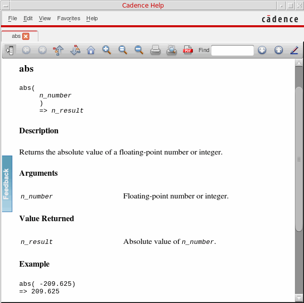
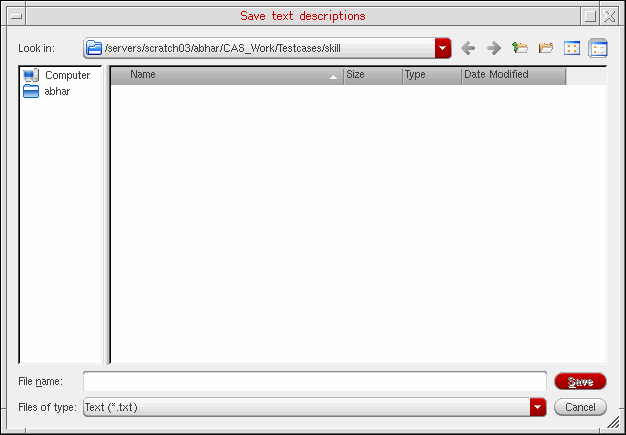

Viewing and Saving Syntax and Description of Matches Found
The SKILL functions and APIs that match the search string are populated in the Results area. Scroll bars appear as necessary. When you highlight a particular match by clicking it, the related syntax and text description appears in the Description area.
Viewing Detailed Descriptions of SKILL APIs
In addition to viewing the syntax and text descriptions that appear in the Description area, you can also view the complete API documentation including the arguments, return values, and examples. To do so:
-
Select a match in the Results area and click More Info. Alternatively, double-click the selected API or press Enter.
The complete documentation of the selected API appears in the Doc Assistant window.

If you click the More Info button again, the documentation of the selected API appears in a new tab in the Doc Assistant window.
Saving SKILL API Descriptions in a Text File
You can save the syntax and description of one or more matches in a text file. To do so, perform the following steps:
- Select the check box corresponding to the required function displayed in the Results area.
-
Click Save. The Save text descriptions form appears.
 -
In the File name field, specify a new or existing filename.
By default, the file gets saved in the current work directory. If you want to save the file in some other directory, you can choose the directory using the Look in drop-down list box. Alternatively, you can use the two directory icons, one for accessing the Parent Directory and another for creating a New Folder. -
Click Save.
If the specified file exists, the SKILL API Finder appends the Description of the selected function(s) to the end of that file. If the file does not exist, the SKILL API Finder creates it.
Related Topics
Types of Searches in SKILL API Finder
Problem Troubleshooting in SKILL API Finder
Return to top